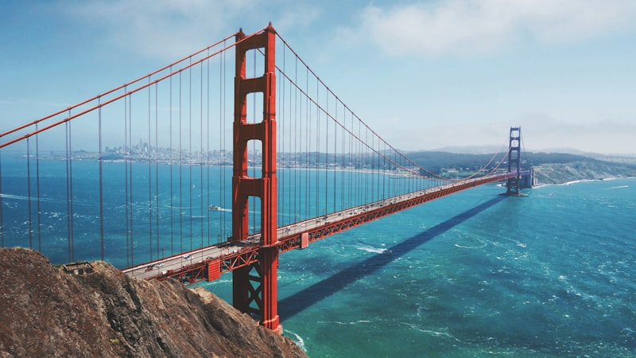
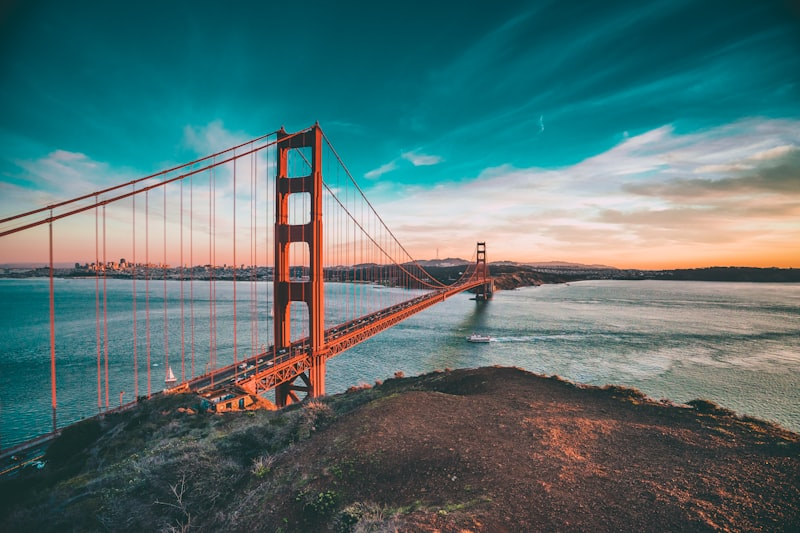

FoodieLand Night Market
Open-air Asian-inspired night market with 200+ food vendors, games, live music. Last day!
foodielandnm.comCow Palace South Parking Lot, Daly City
Carnaval San Francisco
17 blocks of the Mission District packed with music, dance, and 400+ food vendors. Parade at 10 AM, festival until 6 PM.
carnavalsanfrancisco.orgHarrison St, Mission District

Marin Headlands — Hawk Hill Hike
The most iconic Golden Gate Bridge photo views. Steep climb to Hawk Hill summit with 360° views of the bridge, bay, and Pacific.
View trail on AllTrailsRodeo Beach trailhead, Sausalito

Alcatraz + Angel Island Combo
Ferry to Alcatraz (audio tour), then to Angel Island with hiking trails and Chinese immigration history. Meaningful for many Chinese visitors.
touralcatraz.comPier 33, SF (Alcatraz Landing)

Golden Gate Bridge Walk → Lands End
Walk across the Golden Gate Bridge, continue to Crissy Field, then hike the 3.4-mile Lands End coastal cliff trail. Stunning ocean views.
View trail on AllTrailsStart at Crissy Field or Lands End trailhead

Sunday Sunset Sail
Sail under the Golden Gate on a traditional schooner. Help raise the sails and helm the boat. Golden hour views of the city skyline.
eventbrite.comSchooner Freda B, Sausalito Yacht Harbor